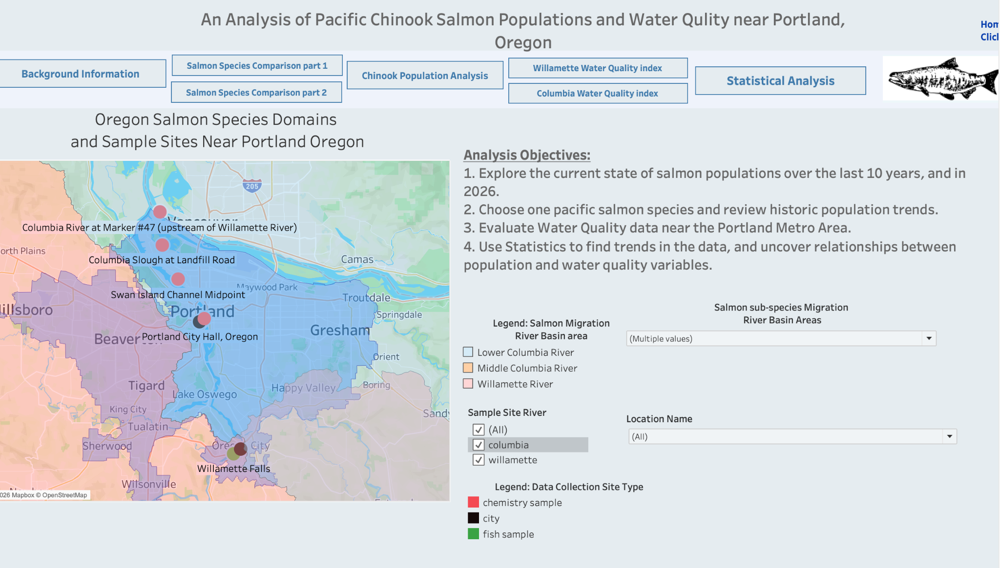
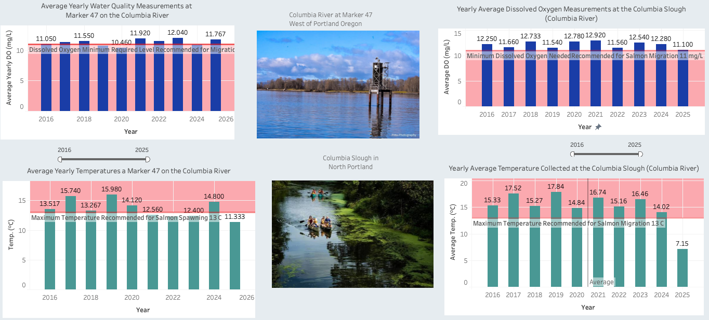
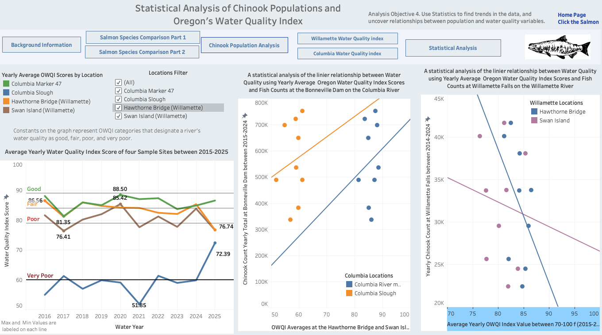

Environmental data analysis · Capstone
Analyzing Pacific Chinook Salmon Returns & Water Quality Measurements near Portland Oregon: Comparing the Columbia and Willamette Rivers
An analysis of Chinook salmon returns and water chemistry measurements across two rivers-- Willamette River, Columbia River, near Portland, Oregon metro area.
Technical skills
- Python
- Pandas
- NumPy
- Matplotlib
- Excel
- Tableau
The question
How does urban water quality in the Portland, Oregon metro area relate to trends in Pacific Chinook salmon returns in the Columbia and Willamette rivers?
Motivated by concerns about Pacific Chinook salmon decline, I compared historical returns with local water quality measurements to explore patterns and potential relationships across the two rivers.
Data & scope
Two fish counting locations. Four water quality sampling locations.
Sources include river conditions data from the U.S. Environmental Protection Agency (EPA) and the National Oceanic and Atmospheric Administration (NOAA); City of Portland water quality data; environmental and fisheries records from state and local agencies, including the Oregon Department of Environmental Quality (DEQ) and the Oregon Department of Fish and Wildlife (ODFW); and historical fish counts at Bonneville Dam from the U.S. Army Corps of Engineers. Fish passage counts provide a measure of returns at specific sites rather than a complete census of regional populations.
Analysis objectives
- Explore Pacific salmon returns over the preceding 10 years and in 2026.
- Select one Pacific salmon species and examine its historical return trends.
- Evaluate water quality in the Portland metro area.
- Use statistical analysis to identify trends and explore relationships between salmon returns and water quality variables.
| Data | Locations and coverage | Purpose |
|---|---|---|
| Initial Pacific salmon species comparisons over time | Bonneville Dam, The Dalles Dam, and Willamette Falls; 10-year average returns for each species | Compare average returns and the proportion represented by each species at each location to select a species for deeper analysis. This exploration led to a focus on Chinook. |
| Yearly Chinook returns | Bonneville Dam on the Columbia River and Willamette Falls on the Willamette River; shared comparison period 1971–2024 | Compare annual Chinook returns between the two rivers using time-series visualizations, correlation analysis, and a baseline index. Examine whether returns rise and fall together, identify long-term trends, and compare the number of fish recorded at each location. |
| Water chemistry and index scores | Hawthorne Bridge, Swan Island, Columbia Marker 47, and Columbia Slough; dashboard index view 2015–2025 | Compare local conditions and explore relationships with returns over overlapping years. |

Technical approach
From source tables to interactive views.
- Inspect and clean. Used Pandas to inspect data types, missing values, and species counts; filtered the water quality data to four stations and checked the resulting records.
- Aggregate and compare. Calculated yearly means for water measurements and index scores. Compared yearly Chinook returns over shared years to examine whether the two locations followed similar patterns. Constructed a baseline index to compare relative change alongside the original counts.
- Explore trends. Used summary statistics, histograms, line charts, trend lines, and correlation analysis to investigate variation and relationships.
- Prepare and visualize. Exported analysis tables to CSV, assembled latitude and longitude data for mapping, and built Tableau dashboards with location and year filters.
Dashboard observations
Different trends across locations.
Returns vary substantially by site and year. In the shared-period dashboard, Bonneville has much larger counts and an upward fitted trend, while Willamette Falls has a downward fitted trend. These are site-level passage counts; the difference in scale alone does not establish which river has a healthier population.

Water quality varies locally. The index chart shows distinct patterns across the four stations, including consistently lower scores at Columbia Slough than at Columbia Marker 47. Aggregated river-level descriptions can hide these local differences.
Relationships require careful interpretation. The scatterplots show different fitted directions across the two river comparisons. Trend lines alone do not establish statistical significance or demonstrate that water chemistry caused changes in returns.
View water chemistry and statistical dashboards


Critical thinking
What this analysis can tell us.
The project describes patterns in the selected datasets and identifies questions for further analysis. It does not isolate the causes of changes in Chinook returns.
- Counting methods, river scale, and sampling practices may differ across sites and years.
- Annual averages can obscure seasonal conditions during migration. Water sampling sites and fish counting sites are not the same locations.
- A composite water quality index summarizes several measurements; it cannot substitute for examining individual chemistry variables.
- Differences in counts between dams should not be interpreted directly as fish mortality without accounting for migration routes and other factors.
A next step would be to verify source coverage and methods, align comparable time windows, and examine individual chemistry measurements alongside migration timing.